#DeLit-Day
Windows Subsystem for Linux and Bash Scripting
#DeLit-day Tutorials, essential skills for everyone
Modules
1-> Windows Subsystem for Linux (WSL)
WSL basics update, upgrade installations
Project(mini): Express Hello World web app
_______________________________
-1.1- About WSL?
|
Developers |
Microsoft Corporation |
|
Platform |
Windows |
|
Released OS |
Windows 8.1 |
|
Current Version |
WSL 2 |
|
Uses |
Linux alongside Windows, Bash scripting, System Administration, Run web apps |
Windows Subsystem for Linux is a new feature offered by Windows and was released from Windows version 8.1, WSL received its official stable release from Windows 10.
WSL provides a Linux compatible kernel interface which is developed by Microsoft. It provides Linux kernel which allow user to run the GNU user space such as Ubuntu. It enables alongside bash scripting with Linux kernel and Windows GUI rather than Windows NT kernel.
WSL provides users to select the GNU, utilities, command-line tools and application on Windows.
Q1: What are the features of WSL
1. Alongside Linux Kernel
2. System Admin
3. Linux GUI
4. Multiple command-line tools and utilities
-1.2- Why WSL?
Okay so when it comes to a kernel installation alongside windows most users are aware about the Virtual Box (VB). Virtual Box is an application use to run Ubuntu, Parrot OS, Linux and many other OS alongside Windows, a stable GNU for most of the users.
Where does the VB fails?
Well a Virtual Box enables the user to access the content of user PC along side window but wont allow the user to perform GUI windows and Kernel Linux operations. Virtual Box will take a small storage of your PC and install a new OS which you can operate while using Windows as main OS and VM with Ubuntu, Kali Linux, Parrot OS, Sun sys etc as a substitute OS.
GUI and Kernel of the same OS for VB
WSL is completely opposite to VM, here the user uses Windows GUI while Linux Kernel in a stable form. Isnt it amazing Windows GUI + Linux terminal/Kernel with a faster performance without even giving a complete installation to GUI of other OS. You can install any command-line tool, system utilities and Kernel based applications that are to be performed.
Q2: Is WSL better than Virtual Box?
1. True
2. False
-1.3- WSL-1 vs WSL-2
WSL 2 is a new version of the architecture that powers the Windows Subsystem for Linux to run ELF64 Linux binaries on Windows. Its primary goals are to increase file system performance, as well as adding full system call compatibility. This new architecture changes how these Linux binaries interact with Windows and your computers hardware, but still provides the same user experience as in WSL 1 (the current widely available version). Individual Linux distros can be run either as a WSL 1 distro, or as a WSL 2 distro, can be upgraded or downgraded at any time, and you can run WSL 1 and WSL 2 distros side by side. WSL 2 uses an entirely new architecture that uses a real Linux kernel. Its a major reworking of the original WSL concept, moving away from translating Linux system calls to Windows to shipping a complete Linux kernel that runs alongside Windows own kernel.
WSL system performance is 20x faster as compared to WSL 1. Initial versions of WSL 2 run up to 20x faster compared to WSL 1 when unpacking a zipped tarball, and around 2-5x faster when using git clone, npm install and cmake on various projects.
-1.4- Getting Started
Part 1
Enabling Developer Mode
Something new for most of the users that Windows allow Developers Mode, enough of it lets get started:
So here we go for our first step toward WSL installation and enabling Developer mode, head over to start and search for Settings
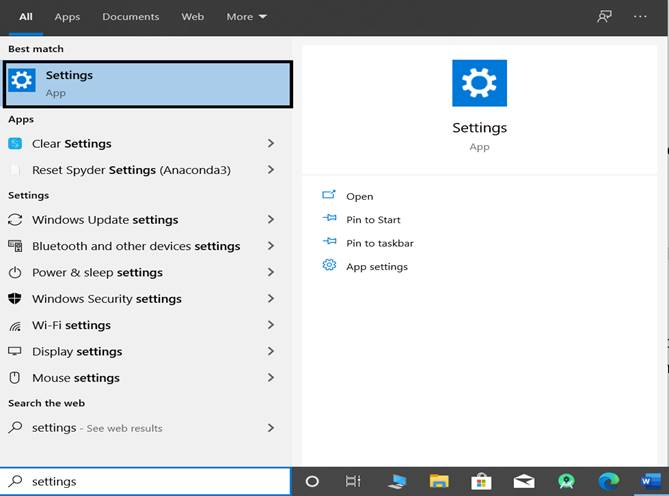
Press enter and proceed to the next step. In the Settings you will get an option Update and Security head over to it
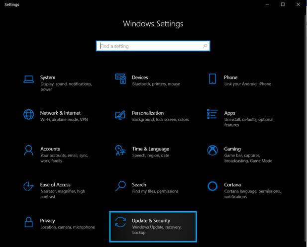
Here Update and Security panel the user can check for recent updates and can enable disable the developer mode, on the left side of screen search for an option For developers and select it. In it now you have 3 modes select Developer Mode and Windows will turn developer mode as default system mode
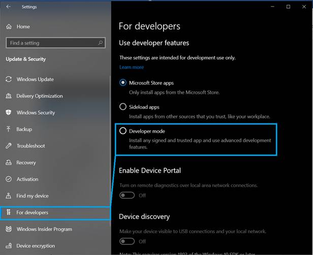
A warning will be triggered select yes and proceed
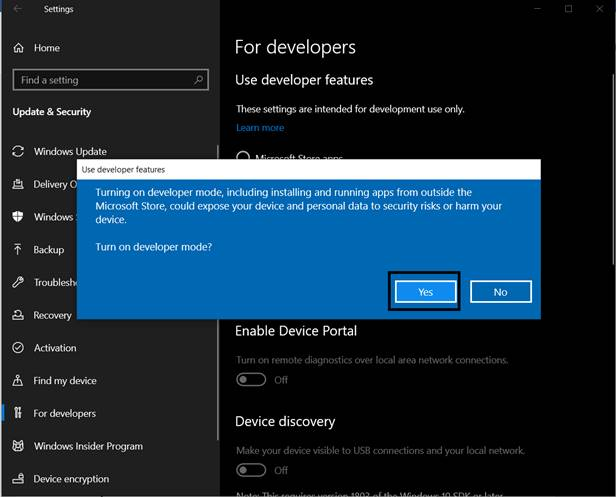
Short Path:
search -> Settings -> Update & Security -> For Developers (left side)-> Developer Mode -> yes
Part 2
Enable WSL
So here we go again enabling WSL mode under Developer mode, lets get started with it
Head over to search and search for Control Panel
Inside Control Panel head over to Programs
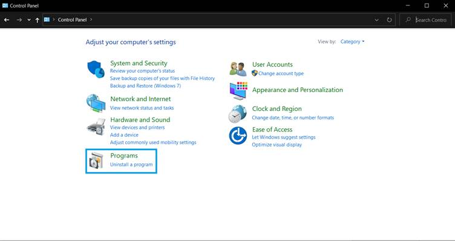
Select Turn windows features on or off
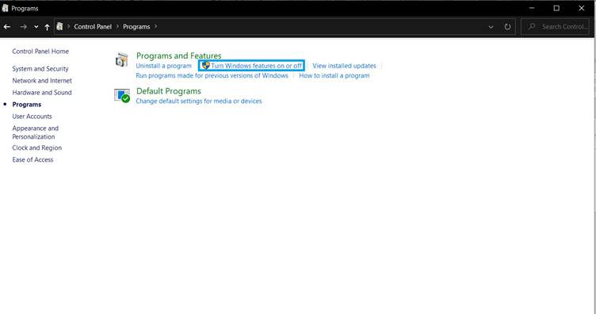
Windows feature menu will pop up just scroll down and select for Windows Subsystem for Linux and click ok
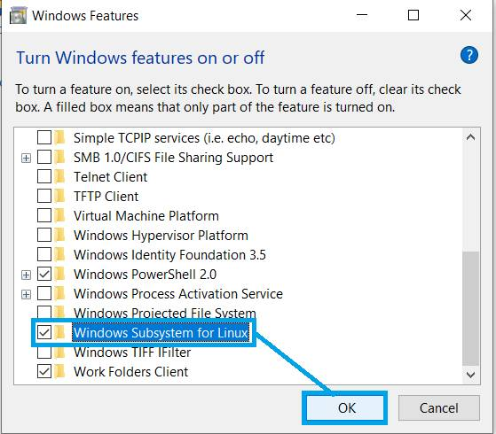
Let Windows feature perform its task and enable WSL for your Windows. A new screen of Windows feature will pop up and you have to restart your system after enabling WSL, select restart now and wait for your system to restart.
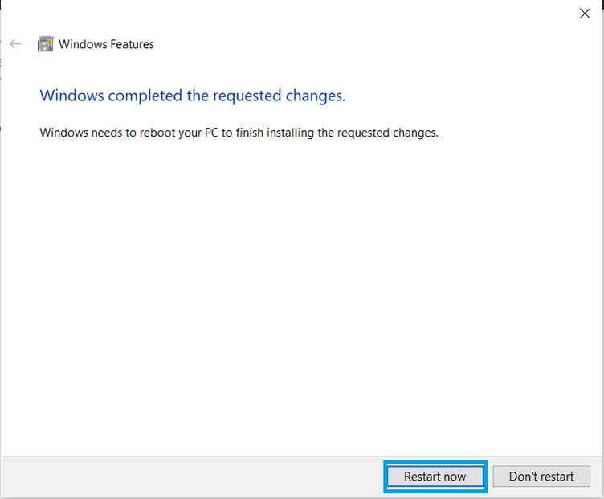
*Congrats! WSL has been enabled in your system*
Short Path:
search -> Control Panel -> Programs -> Turn Windows features on or off -> Windows Subsystem for Linux (scroll down to the end) -> Ok -> Restart now
Part 3
Subsystem Installation
So, we are back again here to start over subsystem installation, now your Windows enabled a new application in your PC bash
The only problem right now with Bash is that we havent installed any subsystem for bash to run, so lets get started with subsystem installation:
So, head over to your Microsoft store and search for Ubuntu
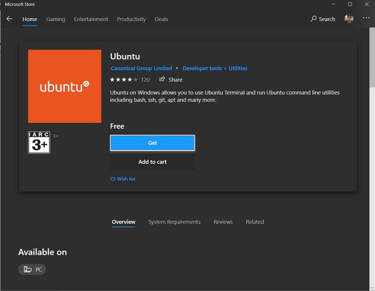
Click on Get and wait till Ubuntu is downloaded and launch the application
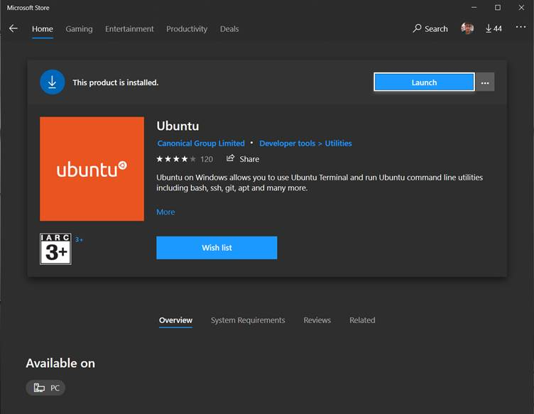
Click on launch and launch the application The installation process for windows will take a few minutes and after that you are all set to set your UNIX username and password. Heres the welcome screen:
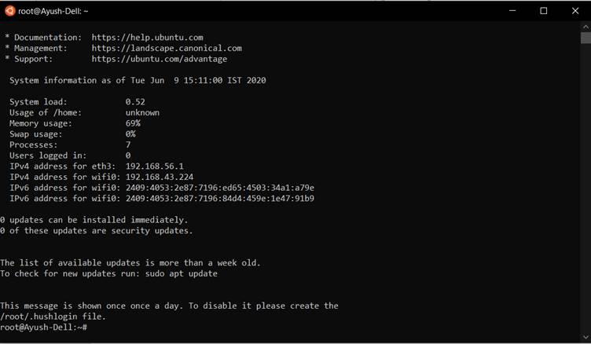
*So here we end up with the installation part*
Q3: You can only install Ubuntu using WSL
1. True
2. False
-1.5- WSL basics
So here we will start with the basic commands that you can use in WSL for example here Ill switch my directory from windows to Linux in the image demonstrated below:
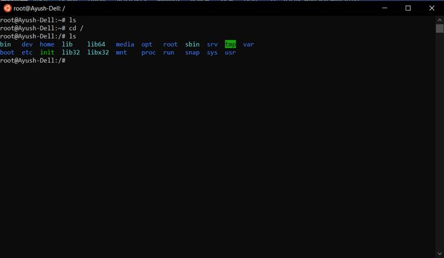
Update your packages by running the given command below:
$ sudo apt update
Once when you are done with the update run the upgrade command, this may take a while:
$ sudo apt upgrade
Lets head over to htop installation which is Linux task manager, run the command given below:
$ sudo apt install htop
Successful installation of htop will let you access the task manager, head over to the next command for setting a localhost:
# ssh localhost
Okay so here we are done with all set of Kernel installations.

So, isnt it interesting operating two OS at the same time.
-1.6- Mini Project: Express Web App
So welcome to your first mini project where you will be holding a localhost of your Express Web App, this is a mini project helping you out in holding the server connections.
To start of with the project, we have to start with few installations and you need an active internet connection for this. The web app application in the tutorial uses cmd as IDE, Ill be accessing Linux Kernel using cmd but I have listed few of the best IDE you can use for it, here are few names listed below:
1. VS code
2. CMD
3. Windows PowerShell
4. Hyper (best IDE for Bash)
5. Ubuntu WSL
The reason for WSL installation was to let your Virtual Machine access bash for SSH, so lets get started now:
install node.js and npm
So, head over to your IDE and type bash if you are using VS code, CMD, Windows PowerShell or Hyper as your IDE. Run the command given below:
$ sudo apt-get install nodejs npm
You can verify your node JS and npm version by running the following commands
$ node version
$ npm --version
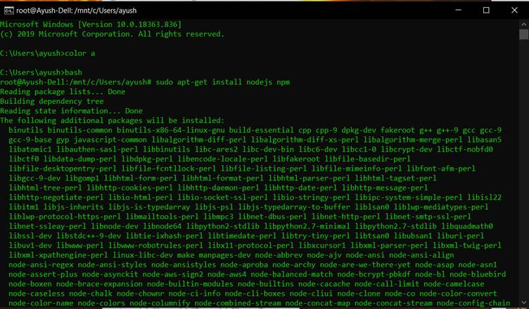
Verify the installations by running the command mentioned above.
install Express Generator
So, heading toward the next part of the installation with installing Express Generator.
What is Express Generator?
Express is a popular JS framework used and run with Node JS
To install Express in your Virtual Machine run the command mentioned below:
$ sudo npm install -g express-generator
CAUTION:
DO NOT TRY TO RUN THIS COMMAND WITH NPM INSTALLATION!!
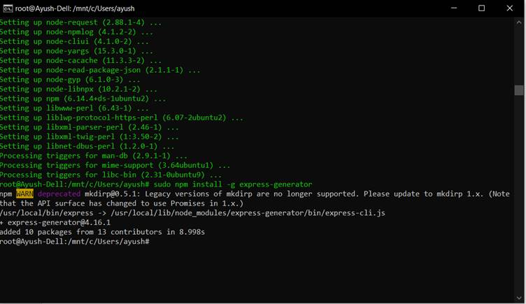
So here we are done with our all installation parts.
Starting off, Express requires a scaffold to create the application so we will be starting with the Express app generation.
To start off with creating a scaffold run the given command:
$ express <your_app_name> --view pug
$ cd your_app_name
$ npm install
Eg: # express designApp view pug
# cd designApp //changes directory to app
# npm install //install the application
Heres the web application installed example:
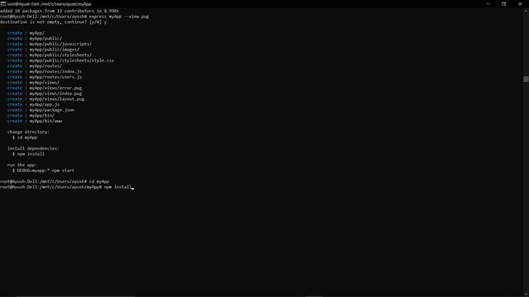
Run your application once the installation is complete with the command mentioned below:
$ npm start
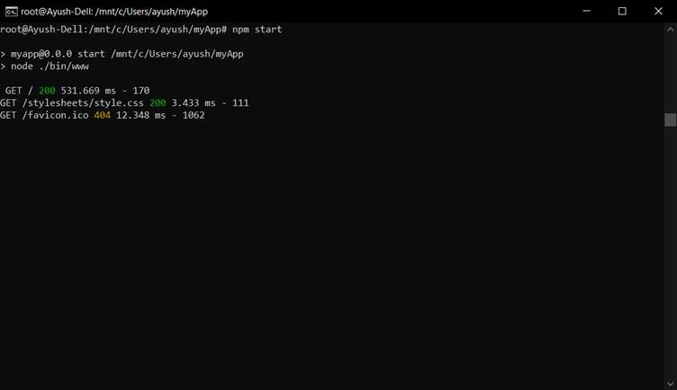
Wait for a few minutes and your app will be started in your browser.
Head over to your browser and type
localhost:3000
Congrats your first web app has been created, show your creativity and get started.
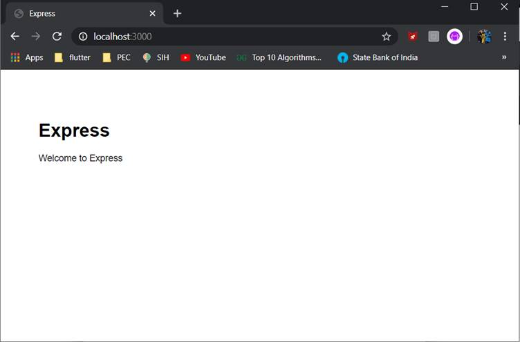
___________________________________________
-2.1- About Scripting
The scripting language is basically a language where instructions are written for a run time environment. They do not require the compilation step and are rather interpreted. It brings new functions to applications and glue complex system together. A scripting language is a programming language designed for integrating and communicating with other programming languages.
Advantages of scripting languages:
Easy learning: The user can learn to code in scripting languages quickly, not much knowledge of web technology is required.
Fast editing: It is highly efficient with the limited number of data structures and variables to use.
Interactivity: It helps in adding visualization interfaces and combinations in web pages. Modern web pages demand the use of scripting languages. To create enhanced web pages, fascinated visual description which includes background and foreground colours and so on.
Functionality: There are different libraries which are part of different scripting languages. They help in creating new applications in web browsers and are different from normal programming languages.
Application of Scripting Languages: Scripting languages are used in many areas:
Scripting languages are used in web applications. It is used in server side as well as client side. Server-side scripting languages are: JavaScript, PHP, Perl etc. and client-side scripting languages are: JavaScript, AJAX, jQuery etc.
Scripting languages are used in system administration. For example: Shell, Perl, Python scripts etc.
It is used in Games application and Multimedia.
It is used to create plugins and extensions for existing applications.
Server control panel and administration for developer.
-2.2- Types of Scripting
Well for scripting there are many languages like bash, Python, Ruby, JavaScript etc but here in this course we will focus on shell scripting in Linux and different types of scripting in Linux, enough of the theory lets dig in to different types of Shell Scripting in Linux:
|
Serial No. |
Shell Type |
Description |
|
1 |
Bash |
This is the most common shell available on all Linux and Debian based systems. It is open source and freeware. |
|
2 |
C Shell |
This Shell scripting uses the C programming shell syntax |
|
3 |
Korn Shell |
Korn is a Unix based Shell scripting program, initially based on the Bash Shell Scripting. This shell is quite advanced and its a high-level programming language.
|
|
4 |
TCSH |
There is no specific full form of TCSH. It is as it is. TCSH is an advanced version of Berkeley Unix C shell. It again supports C style syntax |
-2.3- Basic Shell Scripting
Okay so here in this module we will be discussing Basic Shell Scripting using bash and SSH, here below are few basic shell scripting commands with their functions:
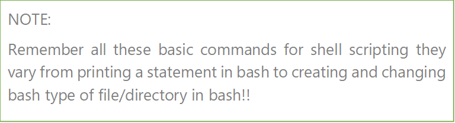
Unix/Linux Command Reference
File Commands:
ls -> Directory listing
ls -al -> Formatted listing with hidden files
ls -lt -> Sorting the Formatted listing by time modification
cd dir -> Change directory to dir
cd -> Change to home directory
pwd -> Show current working directory
mkdir dir -> Creating a directory dir
cat >file -> Places the standard input into the file
more file -> Output the contents of the file
head file -> Output the first 10 lines of the file
tail file -> Output the last 10 lines of the file
tail -f file -> Output the contents of file as it grows, starting with the last 10 lines
touch file -> Create or update file
rm file -> Deleting the file
rm -r dir -> Deleting the directory
rm -f file -> Force to remove the file
rm -rf dir -> Force to remove the directory dir
cp file1 file2 -> Copy the contents of file1 to file2
cp -r dir1 dir2 -> Copy dir1 to dir2; create dir2 if not present
mv file1 file2 -> Rename or move file1 to file2, if file2 is an existing directory
ln -s file -> link Create symbolic link to file
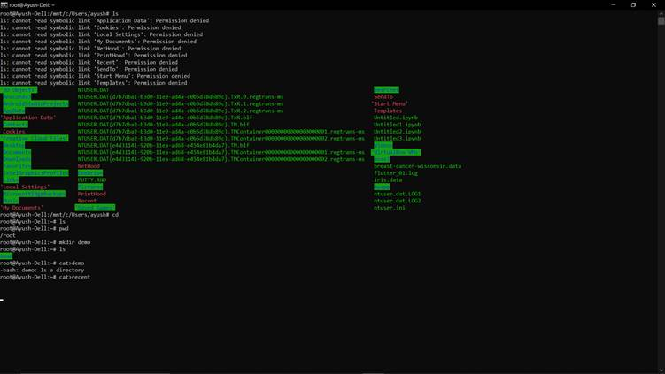
File Permission:
|
chmod octal file |
Change the permission of file to octal, which can be found separately for user,group,world by adding, 4-read(r) 2-write(w) 1-execute(x) |
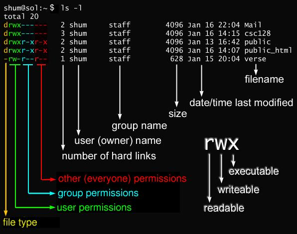
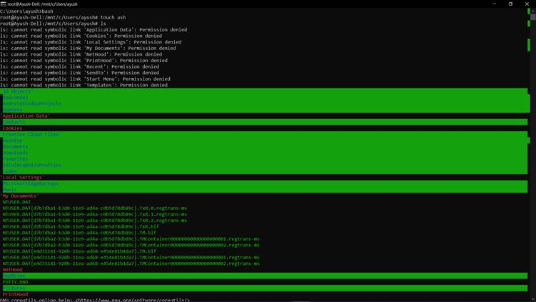
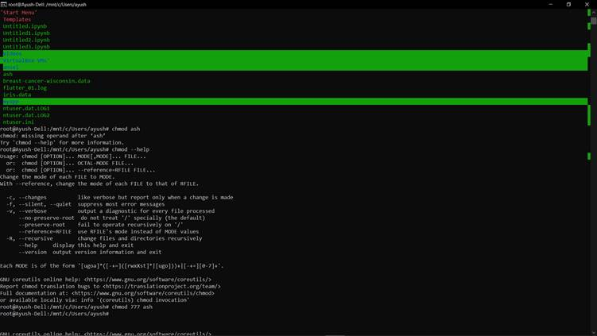
System Info:
date -> Show current date and time
cal -> Shows this month calendar
w -> Display who is on line
whoami -> Who you are logged in as
finger user -> Display information about user
man command -> Show manual command
uname -a -> Kernel information
df -> Disk usage
du -> Directory space usage
free -> Show memory and swap it
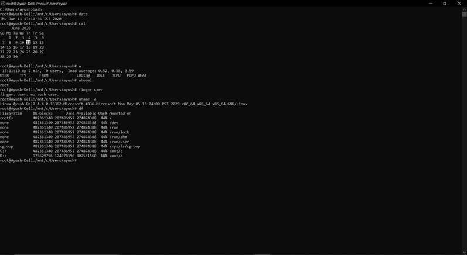
gedit installation
gedit is a bash notepad where different types of scripting are performed,
for bash program the extension is .sh while for C Shell program the extension is .c.
Lets start with gedit installation:
So before if you try to run gedit command the following message will be displayed

Run the following command to install gedit
$ apt install gedit
And wait for the installation to complete
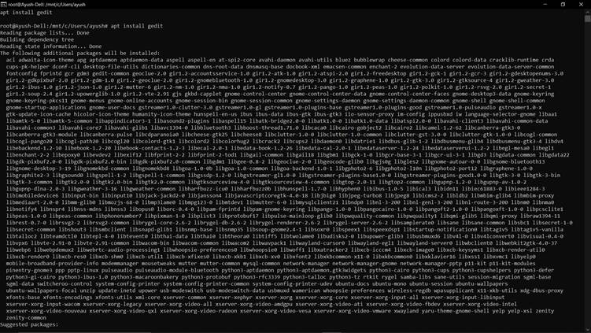
Press y for the permission and a file of 503 MB will be installed automatically, wait for the installation to complete
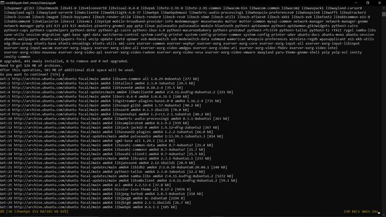
So here right after when your gedit is installed you have to remove openssh-server from your system and then re-install it so that it enables port 2000, just follow the command given below:
$ sudo apt-get remove openssh-server
And then install openssh-server using the command given below:
$ sudo apt-get install openssh-server
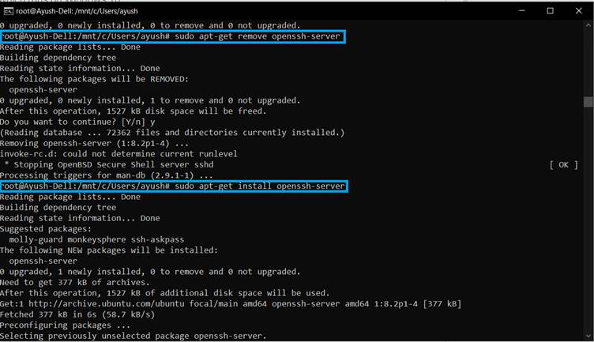
For few of you openssh may not respond so restart the SSH using the given command:
$ sudo service ssh full-restart
If even after restart your SSH do not respond then here we have an alternative way for using it, if openssh do not respond after installation go for dropbear approach. Just run the command given below and get started:
$ sudo apt-get install dropbear
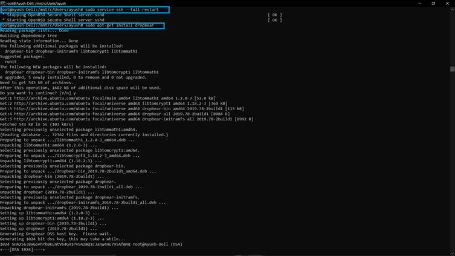
To run GUI based Linux program you need Xming or Cwing as server to operate X server, here is the link to download X server for free:
https://sourceforge.net/projects/xming/
Download X server from above and you are ready with your setup, just install your X server to your WSL with the command:
$ sudo apt-get install x11-apps
//run this command only after X server installation!!
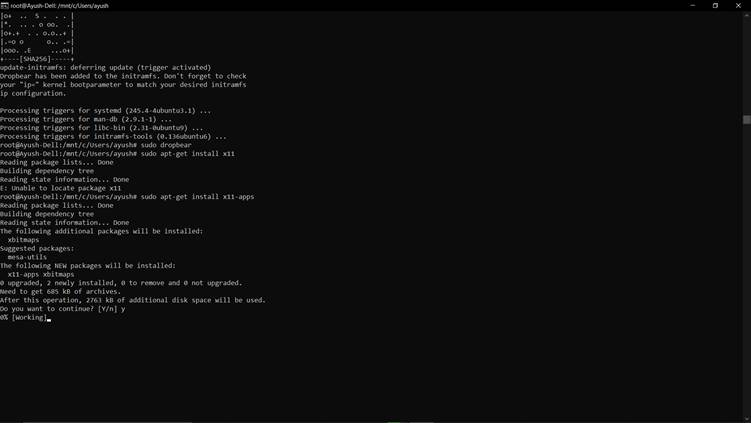
So finally, we have our environment fully set-up, now lets proceed with looping, functions and array in bash
Loops in bash
Loops allow us to take a series of commands and keep re-running them until a particular situation is reached. They are useful for automating repetitive tasks.
There are 3 basic loop structures in Bash scripting which we'll look at below. There are also a few statements which we can use to control the loops operation.
While loop
Syntax:
while [ <some test> ]
do
<commands>
done
Sample program:
1. counter=1
2. while [ $counter -le 10 ]
3. do
4. echo $counter
5. ((counter++))
6. done
7.
8. echo All done
Untill loop
Syntax:s
until [ <some test> ]
do
<commands>
done
Sample Program:
1. counter=1
2. until [ $counter -gt 10 ]
3. do
4. echo $counter
5. ((counter++))
6. done
7.
8. echo All done
For loop
Syntax:s
for var in <list>
do
<commands>
done
Sample program:
1. names='Arvind KRK SRK BRK'
2.
3. for name in $names
4. do
5. echo $name
6. done
7.
8. echo All done
CONTROL STATEMENTS:
Break
Sample Program:
1. for value in $1/*
2. do
3. used=$( df $1 | tail -1 | awk '{ print $5 }' | sed 's/%//' )
4. if [ $used -gt 90 ]
5. then
6. echo Low disk space 1>&2
7. break
8. fi
9. cp $value $1/backup/
10. done
Continue
Sample Program:
1. for value in $1/*
2. do
3. if [ ! -r $value ]
4. then
5. echo $value not readable 1>&2
6. continue
7. fi
8. cp $value $1/backup/
9. done
Select
Syntax:
select var in <list>
do
<commands>
done
Sample Program:
1. names='Kyle Cartman Stan Quit'
2.
3. PS3='Select character: '
4.
5. select name in $names
6. do
7. if [ $name == 'Quit' ]
8. then
9. break
10. fi
11. echo Hello $name
12. done
13.
14. echo Bye
Functions in Bash
Function in bash are a great way to reuse the code, hence here in this section we will be learning about functions and different types of function with sample program examples:
So there are two forms in which a user can implement function in bash:
Syntax 1:
function_name
() {
<commands>
}
Syntax 2:
function
function_name {
<commands>
}
Sample Program:
1. print_something () {
2. echo Hello I am a function
3. }
4.
5. print_something
6. print_something
// something is a function which is called and printed
Parsing Arguments
So parsing argument refers to accessing the data outside function using $
Sample Program:
1. print_something () {
2. echo Hello $1
3. }
4.
5. print_something Mars
6. print_something Jupiter
/* $1 refers to printing Mars and then $1 triggers Jupiter when function is called again*/
Scope Variables
Syntax:
local var_name=<var_value>
Sample Program:
1. var_change () {
2. local var1='local 1'
3. echo Inside function: var1 is $var1 : var2 is $var2
4. var1='changed again'
5. var2='2 changed again'
6. }
7.
8. var1='global 1'
9. var2='global 2'
10.
11. echo Before function call: var1 is $var1 : var2 is $var2
12.
13. var_change
14.
15. echo After function call: var1 is $var1 : var2 is $var2
/* So I guess this program is self explanatory for everyone, the above program switches var1 and var2 as a global gi=unction and then return back to its original state */
Overriding Commands
Use of command in a function
Sample Program:
1. ls () {
2. command ls -lh
3. }
4.
5. Ls
Bash Array
Bash supports one-dimensional numerically indexed and associative arrays types. Numerical arrays are referenced using integers, and associative are referenced using strings.
Numerically indexed arrays can be accessed from the end using negative indices, the index of -1 references the last element. The indices do not have to be contiguous.
Unlike most of the programming languages, Bash array elements dont have to be of the same data type. You can create an array that contains both strings and numbers.
Bash does not support multidimensional arrays, and you cant have array elements that are also arrays.
There is no limit on the maximum number of elements that can be stored in an array.
Creating Array:
Indexed array
declare -a array_name
Method 1 for decleration
array_name[index1]=value1
array_name[index2]=value2
.
.
.
array_name[indexn]=valuen
Method 1 for decleration
array_name=(element1,element2,elementn)
Array Length
To get the array length perform the following code:
{#array_name[@]}
Looped Array
declare -a my_array=( "A" "B" "C" "D )
## Array Loop
for i in "${my_array[@]}"
do
echo "$i"
done
Add New Element
declare -a my_array=( "A" "B" "C" "D )
## add new elements
my_array+=( E )
## print all elements
echo "${my_array[@]}"
Deleting an Element from Array
declare -a my_array=( "A" "B" "C" "D )
## remove element
Unset my_array[2]
## print all elements
echo "${my_array[@]}"
-2.4- QUIZ
1. Which of these is an interface between a user and the kernel?
a. Oracle
b. Window
c. Linux
d. Shell
2. Which command can you use to re-execute a previous command?
a. !cat
b. !!
c. !a
d. !3
3. Which of these commands let you view current jobs being handled by Shell?
a. Job
b. View
c. Show
d. Execute
4. What happens when you press ctrl + z?
a. changes undone
b. shell process stops
c. changes redone
d. SIGNIT generated
5. What happens when you use this kill %s command?
a. System Process will stop
b. Jobs with end s terminated
c. Jobs with start s get terminated
d. All jobs with command beginning with s terminated
6. What are the types of links in Linux?
a. Soft and Hard
b. Open and Close
c. In-line and External
d. Links and Highlights
7. How will you find the 99th line of a file using only tail and head command?
a. tail +99 file1|head +1
b. tail - 99 file1|head -1
c. tail - 99 file1|head +1
d. tail +99 file1|head -1
8. Linux has how many standard streams?
a. 2
b. 3
c. 4
d. 5
9. Which of these is not a Linux standard stream?
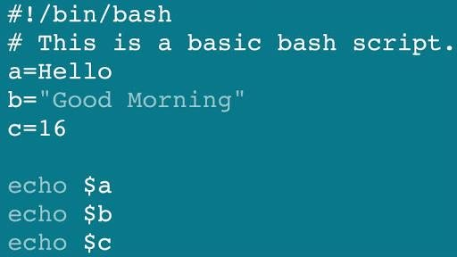
a. 1
b. 2
c. 3
d. 4
10. What type of block contains all the information about a file?
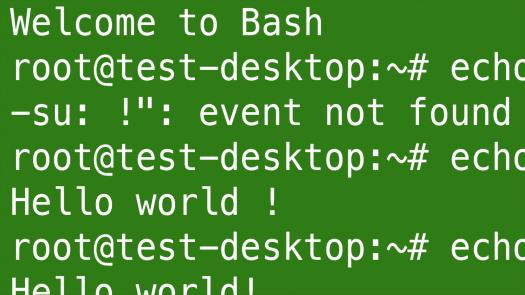
a. Boot Block
b. Super Block
c. Inode Block
d. Command Block
________________________
-3- BONUS
________________________
-3.1- Vim
VIM is a most popular text editor which is a clone of the Vi text editor, written and programmed by Sir Bram Moolenaar. It is a cross platform text editor and hard to operate as it is command centric. Available for most popular platforms like Windows, Linux, Mac and other UNIX operated system.
Features of Vim:
Its memory footprint is very low
It is command centric. You can perform complex text related task with few commands
It is highly configurable and uses simple text file to store its configuration
There are many plug-in available for Vim. Its functionality can be extended in great manner using these plug-in
It supports multiple windows. Using this feature screen can be split into multiple windows
Same as multiple windows, it also supports multiple buffers
It supports multiple tabs which allows to work on multiple files
It supports recording features which allows to record and play Vim commands in repeated manner
Installation:
So we have vim pre-installed in our system as we are using WSL, hence we will be moving on with configuration of Vim.
Just for reference try running these command in your bash:
Update your UBUNTU with the following command:
$ sudo apt-get update

Well now you have updated your UBUNTU and its the time to install and configure Vim in your system, so for installing Vim run the command given below:
$ sudo apt-get install vim
Right after the installation screen is completed go for the configuration screen by running the command given below:
$ which vim
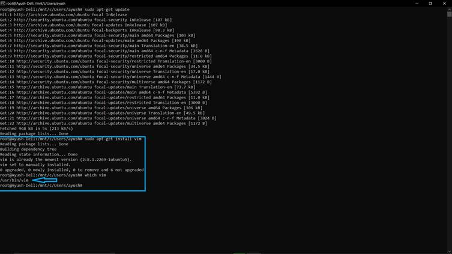
usr/bin/vim refers to complete installation of vim, heading over to the configuration phase 2:
Run command given below to set vim to home directory:
$ echo $HOME
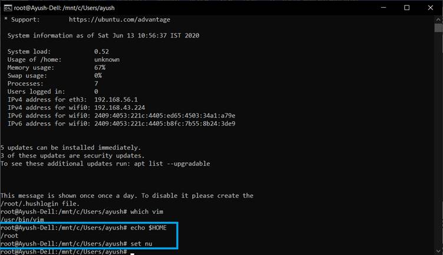
So, now we are done with Vim installation and configuration.

Moving on with Vim:
If youre a programmer or working with structured markup languages like HTML, LaTeX, DocBook, etc., Vim is the bees knees. It offers a number of features that Ill cover in later installments that make working with programming and markup languages much easier.
Welcome to Vim!!!
Get started with Vim by typing the command given below:
$ vim
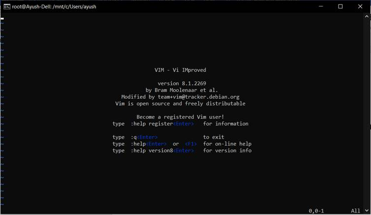
Lets check out what help we got from Vim by running the command mentioned below:
$ :help
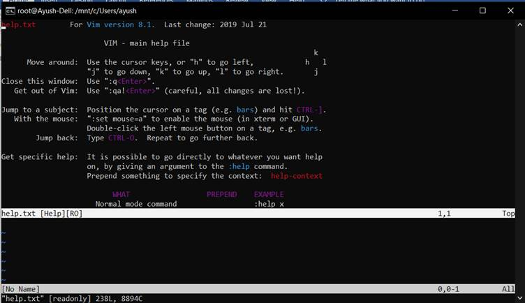
Well that command really helped us with the navigation in Vim but lets discuss all the keywords of Vim to get familiar with it, here are commands of Vim mentioned for different kind of operations and functions:
Moving with Vim (navigation)
h moves the cursor one character to the left.
j moves the cursor down one line.
k moves the cursor up one line.
l moves the cursor one character to the right.
0 moves the cursor to the beginning of the line.
$ moves the cursor to the end of the line.
w move forward one word.
b move backward one word.
G move to the end of the file.
gg move to the beginning of the file.
`. move to the last edit.
Editing
d starts the delete operation.
dw will delete a word.
d0 will delete to the beginning of a line.
d$ will delete to the end of a line.
dgg will delete to the beginning of the file.
dG will delete to the end of the file.
u will undo the last operation.
Ctrl-r will redo the last undo.
Search and Replace
/text search for text in the document, going forward.
n move the cursor to the next instance of the text from the last search. This will wrap to the beginning of the document.
N move the cursor to the previous instance of the text from the last search.
?text search for text in the document, going backwards.
:%s/text/replacement text/g search through the entire document for text and replace it with replacement text.
:%s/text/replacement text/gc search through the entire document and confirm before replacing text.
Copy and Paste
v highlight one character at a time.
V highlight one line at a time.
Ctrl-v highlight by columns.
p paste text after the current line.
P paste text on the current line.
y yank text into the copy buffer.
Save and Quit
:q! quit without saving
:w save an quit
: (enter) last line
:q quit Vim mode
ZZ exit/same like :q
:wq save and quit editor
Creating a file in Vim
So from above you are familiar with all Vim commands, lets get started with creating your first Vim file 😊
Run the command mentioned below to create a file:
$ :edit <file_name>.<format>
//format can be .jsx/.txt and many more
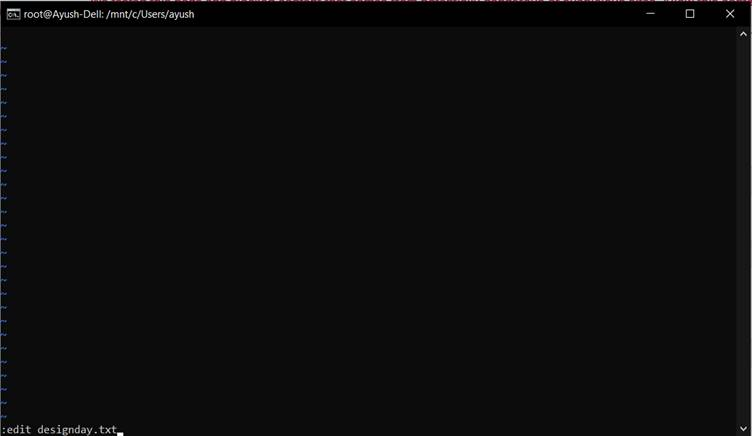
Here I have created a file name designday.txt and right after I hit enter the following will be displayed
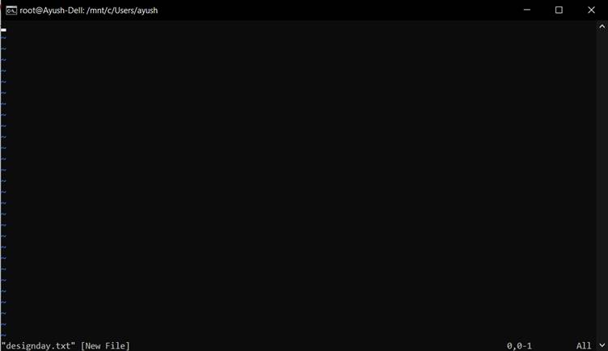
So, we have our file ready now, lets enter some content in it. Run the command mentioned below to enter content in your file:
$ i (enter)
// i will take you to insert mode of Vim!!
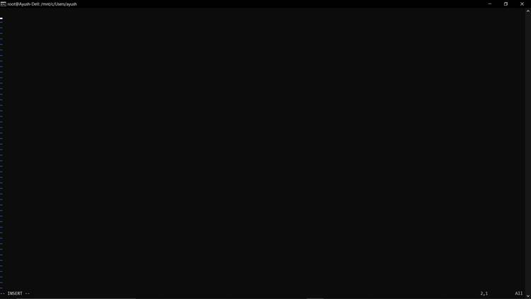
Lets enter some content in our file:
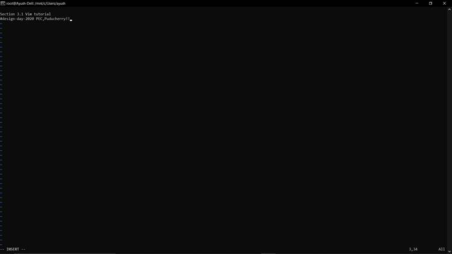
Quit and save your work
Press Esc button first to leave the insert mode and then run the command mentioned below to save your work:
$ :w
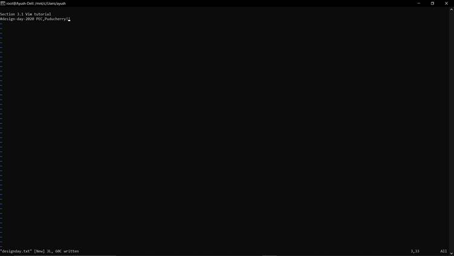
Quit Vim before moving on!!
$ :q
So we have saved and quit our work, lets check out our work by reading our created file. Run the command mentioned below to read your file:
$ vim <file_name>.<format>
//Ill be opening my designday.txt file here
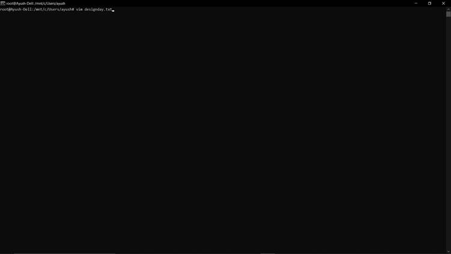
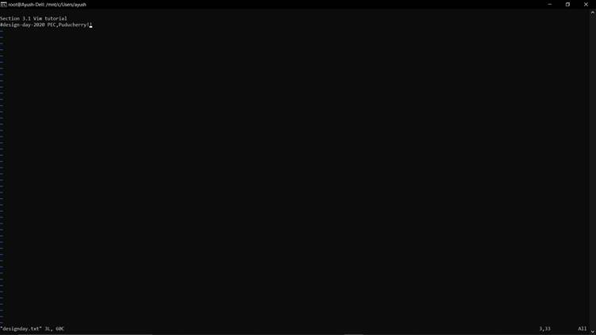
Editing existing file:
Run the command used to open an existing file and enter the insert mode by running the command mentioned below:
$ i
Make the changes you want to make in your file and dont forget to save your work by running the command mentioned below:
//save
$ :w
//quit editor
$ :q
<or>
//save and quit editor
$ :wq
Explore more of Vim with the site resource given below
https://www.tutorialspoint.com/vim/index.htm
-3.2- ADD-ONS
Install wsl command line using the command mentioned below:
$ apt install wsl

Get your server certification saved with command
$ wsl xcert
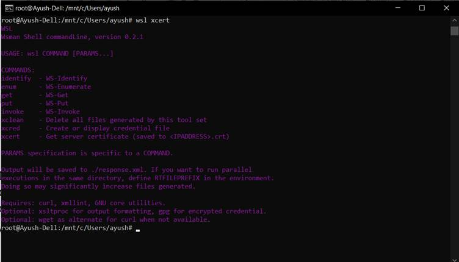